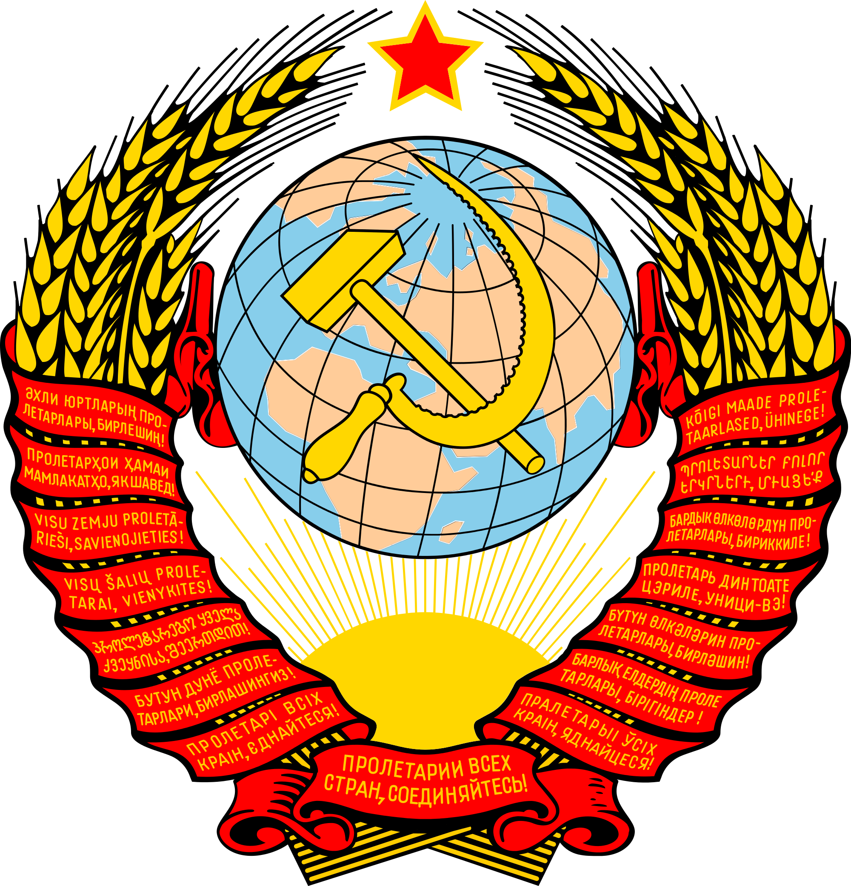

EFEITO MANIFESTO COMUNISTA
Converta suas fotos para um divertido diagrama do primeiro capítulo do Mifesto Comunista, escrito por Karl Marx e lançado em 1848!
😍😍😍
Clique abaixo ou arraste seu arquivo:
Arquivo
Resultado: